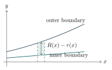
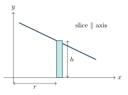
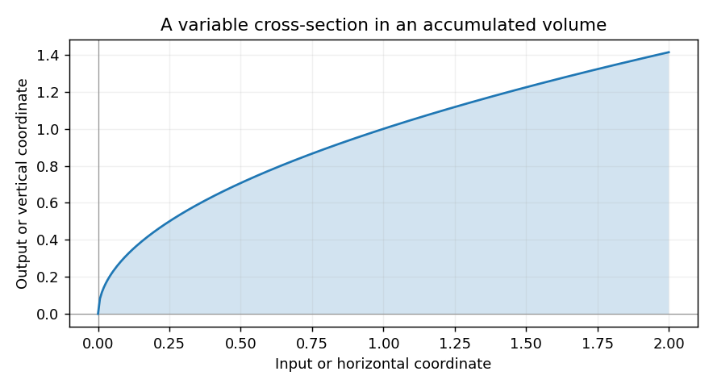

Applications of Definite Integrals
Guiding idea. Integration converts a local quantity into a total. A thin slice has a small volume; a narrow band has a small area; a short movement against a force requires a small amount of work. The challenge is to identify the correct differential contribution, including its units, before taking a limit of sums.
Learning outcomes. Students will derive and apply slicing, disk, washer, and shell formulas; compute lengths of smooth curves and areas of surfaces of revolution; model work under variable forces; calculate moments, centroids, and centers of mass; check units and physical reasonableness; and reproduce and investigate results in R and Python.
Prerequisites. Definite integrals, substitution, derivatives, and graphing from Chapters 1–5. The chapter uses single-variable integrals throughout.
Visual concept investigation
Choose the element before choosing the formula
Applications of integration begin with a small physical element: a cross-sectional slice, cylindrical shell, short arc, or mass element. Draw and label that element, express its contribution using units, and then accumulate. This procedure is more transferable than memorizing unrelated formulas.

Guided investigation. If a solid has cross-sectional area \(A(x)\) measured in square centimeters and \(x\) is in centimeters, justify why \(\int_a^b A(x)\,dx\) has units of cubic centimeters.
Interactive investigation: Volumes by cross-sections
Volumes using cross-sections
Why slicing works
Imagine a loaf with varying cross-sectional area. A thin slice at position \(x\) has thickness \(\Delta x\) and approximate volume \(A(x)\Delta x\). Adding slices and letting their thickness shrink yields the following theorem.
Theorem — Volume by known cross-sectional area. If a solid extends from \(x=a\) to \(x=b\) and its cross-sectional area \(A(x)\) perpendicular to the \(x\)-axis is continuous, then \[\boxed{V=\int_a^b A(x)\,dx.}\]
Proof. Partition \([a,b]\) into narrow subintervals. Replace each portion by a prism with base area \(A(x_i^*)\) and thickness \(\Delta x_i\). Its volume is \(A(x_i^*)\Delta x_i\). Summation and the limit as the maximum thickness approaches zero give the integral.
Dimensional check: \(A(x)\) has units of length squared and \(dx\) has units of length, so \(V\) has units of length cubed. The integral does not require a circular cross-section.
Example — Square cross-sections. A solid has a base in the first quadrant bounded by \(y=\sqrt{x}\), the \(x\)-axis, and \(x=4\). Cross-sections perpendicular to the \(x\)-axis are squares. Find its volume.
Solution. At position \(x\), the square’s side is \(s(x)=\sqrt{x}\), so \(A(x)=s(x)^2=x\). Therefore \(V=\int_0^4x\,dx=[x^2/2]_0^4=8\) cubic units. Notice that we squared the side length, not the function’s antiderivative.
Example — Equilateral-triangle cross-sections. The base region lies under \(y=2-x\) and above \(y=0\) for \(0\le x\le2\). Perpendicular cross-sections are equilateral triangles.
Solution. Each triangle has side \(2-x\) and area \(A(x)=\frac{\sqrt3}{4}(2-x)^2\). Hence \[V=\frac{\sqrt3}{4}\int_0^2(2-x)^2\,dx=\frac{\sqrt3}{4}\cdot\frac83=\frac{2\sqrt3}{3}.\] This example illustrates that the geometry of the slice determines the coefficient.
Disks and washers
Rotating a region about an axis produces a solid of revolution. A slice perpendicular to the axis is a disk if the region touches the axis and a washer if it leaves a hole.
Theorem — Disk method. When rotation about the \(x\)-axis produces disks of radius \(R(x)\ge0\) for \(a\le x\le b\), the volume is \[\boxed{V=\pi\int_a^b R(x)^2\,dx.}\]
Theorem — Washer method. When rotation about the \(x\)-axis produces washers with outer radius \(R(x)\) and inner radius \(r(x)\), where \(0\le r(x)\le R(x)\), the volume is \[\boxed{V=\pi\int_a^b\bigl(R(x)^2-r(x)^2\bigr)\,dx.}\]

Example — Rotating a parabolic region. Rotate the region below \(y=\sqrt{x}\), above \(y=0\), and between \(x=0\) and \(x=4\) about the \(x\)-axis.
Solution. Each disk has radius \(\sqrt{x}\), giving \(V=\pi\int_0^4x\,dx=8\pi\).
Example — A hollow solid. Rotate the region between \(y=3\) and \(y=1+x/2\) for \(0\le x\le2\) about the \(x\)-axis.
Solution. Outer radius \(R=3\) and inner radius \(r=1+x/2\). Thus \[V=\pi\int_0^2\left(9-(1+x/2)^2\right)dx=\pi\left[8x-\frac{x^2}{2}-\frac{x^3}{12}\right]_0^2=\frac{40\pi}{3}.\] A sketch shows why subtracting the inner disk is essential.
Choosing the direction of slicing
A horizontal slice uses \(dy\), not \(dx\). If a solid is rotated around a vertical axis, horizontal disks or washers may be simpler than vertical ones. Always sketch a typical slice and label the radius as a distance from the axis.
Example — Rotation about a horizontal line. Rotate the region between \(y=x\) and \(y=x^2\) for \(0\le x\le1\) about \(y=2\).
Solution. The lower graph \(y=x^2\) is farther from \(y=2\), so \(R=2-x^2\) and \(r=2-x\). Consequently \[V=\pi\int_0^1\bigl[(2-x^2)^2-(2-x)^2\bigr]dx=\pi\int_0^1(4x-5x^2+x^4)dx=\frac{8\pi}{15}.\] A common error is to use \(x\) and \(x^2\) directly as radii even though the rotation axis is \(y=2\).
Volumes using cylindrical shells
Unrolling a thin shell
A thin cylindrical shell with radius \(r\), height \(h\), and thickness \(\Delta r\) has approximate volume \((2\pi r)h\Delta r\). The factor \(2\pi r\) is the circumference of the shell.
Theorem — Shell method. If a region rotated about the \(y\)-axis produces shells of radius \(x\) and height \(h(x)\) for \(0\le a\le x\le b\), then \[\boxed{V=2\pi\int_a^b xh(x)\,dx.}\]
Proof. The exact volume of a hollow cylinder of inner radius \(r\) and outer radius \(r+\Delta r\) is \(\pi((r+\Delta r)^2-r^2)h=2\pi rh\Delta r+\pi h(\Delta r)^2\). The last term becomes negligible in the Riemann-sum limit, leaving the shell integral.

Example — Shells around the vertical axis. Rotate the region under \(y=4-x^2\), above \(y=0\), and for \(0\le x\le2\) about the \(y\)-axis.
Solution. Radius \(x\), height \(4-x^2\). Thus \[V=2\pi\int_0^2x(4-x^2)dx=2\pi[2x^2-x^4/4]_0^2=8\pi.\] To check, horizontal disks have radius \(\sqrt{4-y}\) for \(0\le y\le4\), giving \(\pi\int_0^4(4-y)dy=8\pi\).
Example — Shells about an offset axis. Rotate the region under \(y=x(2-x)\), \(0\le x\le2\), about the vertical line \(x=3\).
Solution. The radius is \(3-x\), not \(x\). The shell height is \(x(2-x)\). Hence \[V=2\pi\int_0^2(3-x)x(2-x)dx=2\pi\int_0^2(6x-5x^2+x^3)dx=\frac{16\pi}{3}.\]
Remark. Disks and washers use slices perpendicular to the rotation axis; shells use slices parallel to it. Either method can work when the setup is correct. Choose the one with the simpler bounds and integrand.
Arc length
From a polygonal path to a smooth curve
A curve can be approximated by straight line segments. For \(y=f(x)\), the length of a short chord is \(\sqrt{(\Delta x)^2+(\Delta y)^2}=\sqrt{1+(\Delta y/\Delta x)^2}\,\Delta x\). As the partition becomes fine, the difference quotient approaches \(f'(x)\).
Theorem — Arc length of a graph. If \(f'\) is continuous on \([a,b]\), then the length of the graph \(y=f(x)\) from \(a\) to \(b\) is \[\boxed{L=\int_a^b\sqrt{1+[f'(x)]^2}\,dx.}\]
Proof — Derivation. Approximate the curve by a polygon through points \((x_i,f(x_i))\). The mean value theorem gives \(\Delta y_i=f'(c_i)\Delta x_i\) for some \(c_i\) in the subinterval. Thus the polygon length is \(\sum\sqrt{1+f'(c_i)^2}\Delta x_i\), a Riemann sum converging to the displayed integral.
Example — Length of a straight line. Find the length of \(y=2x+1\) on \(0\le x\le3\).
Solution. \(f'=2\), so \(L=\int_0^3\sqrt5\,dx=3\sqrt5\). This matches the distance formula between \((0,1)\) and \((3,7)\).
Example — A curve with an exact answer. Find the length of \(y=\frac23x^{3/2}\) on \(0\le x\le3\).
Solution. \(f'(x)=\sqrt{x}\), so \[L=\int_0^3\sqrt{1+x}\,dx=\left[\frac23(1+x)^{3/2}\right]_0^3=\frac{14}{3}.\] The length exceeds the horizontal distance \(3\), as it must.
When the integral has no elementary antiderivative
For \(y=x^2\) on \([0,1]\), the length is \(\int_0^1\sqrt{1+4x^2}\,dx\). Numerical quadrature is often appropriate even when an exact expression exists. Numerical computation should complement, not replace, the mathematical derivation.
Theorem — Arc length for \(x=g(y)\). If \(g'\) is continuous for \(c\le y\le d\), then \[L=\int_c^d\sqrt{1+[g'(y)]^2}\,dy.\]
Example — Choosing the easier variable. For \(x=y^2\) from \(y=0\) to \(y=1\), write the arc-length integral.
Solution. Since \(dx/dy=2y\), \(L=\int_0^1\sqrt{1+4y^2}\,dy\). Expressing \(y=\sqrt{x}\) would introduce a derivative singular at \(x=0\) and a less convenient setup.
Areas of surfaces of revolution
A narrow frustum
Rotating a short curve segment around the \(x\)-axis produces approximately a conical frustum. Its lateral area is approximately circumference \(2\pi y\) times slant length \(ds\). From arc length, \(ds=\sqrt{1+[f'(x)]^2}\,dx\).
Theorem — Surface area about the \(x\)-axis. If \(f\ge0\) and \(f'\) is continuous on \([a,b]\), then rotating \(y=f(x)\) about the \(x\)-axis gives surface area \[\boxed{S=2\pi\int_a^b f(x)\sqrt{1+[f'(x)]^2}\,dx.}\]
Theorem — Surface area about the \(y\)-axis. For \(f\ge0\) on \([a,b]\) with \(a\ge0\), rotating \(y=f(x)\) about the \(y\)-axis gives \[\boxed{S=2\pi\int_a^b x\sqrt{1+[f'(x)]^2}\,dx.}\]
Remark. A surface-area formula integrates circumference times arc length; a volume formula integrates cross-sectional area times thickness. The square root in the surface formula cannot generally be omitted.
Example — Lateral area of a cone. Rotate \(y=x/2\) for \(0\le x\le4\) about the \(x\)-axis.
Solution. The radius increases from \(0\) to \(2\), and \(f'=1/2\). Hence \[S=2\pi\int_0^4\frac{x}{2}\sqrt{1+\frac14}\,dx=\frac{\pi\sqrt5}{2}\int_0^4x\,dx=4\pi\sqrt5.\] This agrees with \(\pi r\ell\) for radius \(r=2\) and slant height \(\ell=2\sqrt5\).
Example — A curved surface. Rotate \(y=\sqrt{x}\), \(1\le x\le4\), about the \(x\)-axis.
Solution. \(f'=1/(2\sqrt{x})\), so \[S=2\pi\int_1^4\sqrt{x}\sqrt{1+\frac{1}{4x}}dx=\pi\int_1^4\sqrt{4x+1}\,dx=\frac{\pi}{6}\left(17^{3/2}-5^{3/2}\right).\]
Physical modeling considerations
If a material coating costs \(c\) dollars per square meter, multiplying the computed area by \(c\) estimates coating cost. A model must distinguish the curved lateral surface from end caps and account for any portions that are not coated.
Work
From constant to variable force
For a constant force \(F\) acting along the direction of motion through displacement \(d\), work is \(W=Fd\). When force varies with position, the work over a short movement is approximately \(F(x_i^*)\Delta x_i\).
Theorem — Work by a variable force. If a continuous force \(F(x)\) acts parallel to displacement on \([a,b]\), the work performed is \[\boxed{W=\int_a^b F(x)\,dx.}\]
Units: newtons times meters equals joules. A negative integral represents negative work relative to the chosen direction, not a negative magnitude of energy consumed.
Example — Stretching a spring. A spring obeys Hooke’s law with force magnitude \(F(x)=kx\). If \(k=120\) N/m, how much work is needed to stretch it from its natural length to \(0.15\) m?
Solution. \(W=\int_0^{0.15}120x\,dx=60(0.15)^2=1.35\) J. The spring’s restoring force points opposite the stretch; the applied force required for a slow stretch points with the displacement.
Example — Work with a nonzero starting extension. Stretch the same spring from \(0.10\) m to \(0.20\) m.
Solution. \(W=\int_{0.10}^{0.20}120x\,dx=60(0.20^2-0.10^2)=1.8\) J. This is not the same as stretching from zero to \(0.10\) m because the force increases with extension.
Pumping liquid from a tank
A horizontal slice of liquid at height \(y\) has volume \(A(y)dy\), weight \(\rho g A(y)dy\), and must be lifted a distance \(D(y)\). Therefore \[\boxed{W=\int_{y_{\min}}^{y_{\max}}\rho g A(y)D(y)\,dy.}\] Here \(\rho\) is mass density in kg/m\(^3\), \(g\) is gravitational acceleration in m/s\(^2\), and \(D(y)\) is in meters.
Example — Pumping a cylindrical tank. A vertical cylindrical tank of radius \(1\) m contains water to a depth of \(3\) m. Water is pumped to a spout \(1\) m above the top. Use \(\rho=1000\) kg/m\(^3\) and \(g=9.8\) m/s\(^2\).
Solution. Set \(y=0\) at the bottom. Each slice has area \(\pi\) m\(^2\) and must travel \(D(y)=4-y\) m. Thus \[W=9800\pi\int_0^3(4-y)dy=9800\pi(12-4.5)=73500\pi\ \text{J}.\] A unit check gives \((\text{N/m}^3)(\text{m}^2)(\text{m})(\text{m})=\text{N}\cdot\text{m}\).
Remark. For a tapered tank, the cross-sectional area \(A(y)\) varies with height. The slice’s volume is \(A(y)dy\); multiplying by density alone gives mass, not weight.
Moments and centers of mass
Balance as a weighted average
For point masses \(m_i\) at positions \(x_i\), the center of mass is \(\bar x=\frac{\sum m_ix_i}{\sum m_i}\). A continuous mass distribution replaces sums by integrals.
Definition — One-dimensional center of mass. For a rod on \([a,b]\) with continuous linear mass density \(\lambda(x)\ge0\) and total mass \(M>0\), \[M=\int_a^b\lambda(x)dx,\qquad \boxed{\bar x=\frac1M\int_a^b x\lambda(x)dx.}\]
Example — Nonuniform rod. A rod extends from \(x=0\) to \(x=2\) m and has density \(\lambda(x)=1+x\) kg/m. Find its center of mass.
Solution. \(M=\int_0^2(1+x)dx=4\) kg. The moment about the origin is \(\int_0^2x(1+x)dx=[x^2/2+x^3/3]_0^2=14/3\) kg\(\cdot\)m. Hence \(\bar x=\frac{14/3}{4}=7/6\) m. Since the rod is heavier toward the right, its balance point lies to the right of \(x=1\).
Centroids of plane regions
For a region between an upper curve \(f(x)\) and a lower curve \(g(x)\) on \([a,b]\), with \(f\ge g\), a vertical strip has area \(dA=[f(x)-g(x)]dx\). Its horizontal coordinate is \(x\) and its vertical center is \((f+g)/2\).
Theorem — Centroid of a region between two graphs. Let \(A=\int_a^b(f-g)dx>0\). For a lamina of constant areal density, its centroid is \[\boxed{\bar x=\frac{\int_a^b x(f-g)dx}{A},\qquad \bar y=\frac{\frac12\int_a^b(f^2-g^2)dx}{A}.}\]
Proof — Derivation. The moment about the \(y\)-axis is \(M_y=\int x\,dA=\int_a^b x(f-g)dx\). The moment about the \(x\)-axis is \(M_x=\int \frac{f+g}{2}\,dA=\frac12\int(f^2-g^2)dx\). Divide each moment by total area.
Example — Centroid under a line. Find the centroid of the triangle under \(y=2-x\), above the \(x\)-axis, for \(0\le x\le2\).
Solution. Area \(A=\int_0^2(2-x)dx=2\). Then \[\bar x=\frac12\int_0^2x(2-x)dx=\frac23,\qquad \bar y=\frac14\int_0^2(2-x)^2dx=\frac23.\] The result agrees with the intersection of the medians of the triangle with vertices \((0,0)\), \((2,0)\), and \((0,2)\).
Example — Centroid under a parabola. Let \(0\le y\le 4-x^2\) for \(-2\le x\le2\). Find the centroid.
Solution. Symmetry about the \(y\)-axis gives \(\bar x=0\). Area is \(A=\int_{-2}^2(4-x^2)dx=32/3\). Also, \[M_x=\frac12\int_{-2}^2(4-x^2)^2dx=\frac{256}{15},\quad \bar y=\frac{256/15}{32/3}=\frac85.\] The centroid is \((0,8/5)\), inside the region as expected.
Variable areal density
If the density varies with position, geometric area is no longer proportional to mass. For a lamina with density \(\rho(x,y)\), one would generally require a double integral; that topic belongs to multivariable calculus. In this single-variable chapter, variable density can still be handled for a thin rod, or for a stripwise-uniform lamina with density depending only on \(x\).
A problem-solving framework
Sketch and label. Identify boundaries, axes, and the physically meaningful variable.
Choose a thin element. Is it a slice, disk, washer, shell, curve segment, fluid layer, or mass element?
Write a differential contribution. Examples: \(A(x)dx\), \(2\pi rh\,dr\), \(\sqrt{1+(f')^2}dx\), \(F(x)dx\).
Check units and bounds. A correct formula with incorrect bounds produces an incorrect model.
Integrate analytically when possible. Simplify before computing.
Verify independently. Use geometry, an alternate slicing direction, numerical quadrature, or a dimensional check.
Interpret. Explain the meaning, magnitude, and limitations of the result.
Remark. In the following laboratories, R appears in a complete section before Python. Code is presented as a transparent computational companion to the mathematics, not as a replacement for derivations.
R computational laboratories
Laboratory R1: Compare disk and shell volumes
For the region under \(y=4-x^2\), \(0\le x\le2\), rotated about the \(y\)-axis, the shell and disk methods should agree at \(8\pi\).
shell <- integrate(function(x) 2*pi*x*(4-x^2), 0, 2)$value
disk <- integrate(function(y) pi*(4-y), 0, 4)$value
exact <- 8*pi
cat("Shell:", round(shell, 6), "\n")
cat("Disk: ", round(disk, 6), "\n")
cat("Difference:", abs(shell-disk), "\n")
cat("Exact:", round(exact, 6), "\n")Investigate. Replace the parabola by \(y=9-x^2\) on \([0,3]\). Derive the new exact volume before changing the code. Explain why a numerical agreement is a useful check but not a proof of the formulas.
Laboratory R2: Cross-sections and geometric sensitivity
The cross-sectional area for equilateral triangles of side \(2-x\) is \(\sqrt3(2-x)^2/4\).
area <- function(x) sqrt(3)/4 * (2-x)^2
volume <- integrate(area, 0, 2)$value
cat("Triangular cross-section volume:", volume, "\n")
x <- seq(0, 2, length.out=200)
plot(x, area(x), type="l", lwd=2, xlab="Position x",
ylab="Cross-sectional area A(x)")Investigate. Suppose all triangle side lengths are multiplied by \(1.1\). By what factor does the volume change? Explain the square-law scaling.
Laboratory R3: Polygonal approximations to arc length
A polygonal approximation uses straight segments joining sampled points on the curve \(y=x^2\).
poly_length <- function(n) {
x <- seq(0, 1, length.out=n+1)
y <- x^2
sum(sqrt(diff(x)^2 + diff(y)^2))
}
exact_num <- integrate(function(x) sqrt(1+4*x^2), 0, 1)$value
for (n in c(4, 8, 16, 32, 64, 128)) {
cat("n =", n, "polygon =", round(poly_length(n), 8),
"error =", round(exact_num-poly_length(n), 8), "\n")
}Investigate. Why do the polygonal estimates approach the integral from below for this example? Can you conclude that this must occur for every possible curve?
Laboratory R4: Surface area and coating cost
surface <- integrate(function(x) 2*pi*sqrt(x)*
sqrt(1+1/(4*x)), 1, 4)$value
cost_per_m2 <- 18
cat("Lateral surface area:", round(surface, 6), "m^2\n")
cat("Estimated coating cost: $", round(cost_per_m2*surface, 2), "\n")Investigate. Explain why the calculation does not automatically include circular end caps. If coating thickness changes with position, what additional model information is required?
Laboratory R5: Pumping work and outlet height
work <- function(spout_height) {
integrate(function(y) 1000*9.8*pi*(spout_height-y),
0, 3)$value
}
heights <- c(3, 3.5, 4, 5)
results <- data.frame(outlet_m=heights,
work_J=sapply(heights, work))
print(results)
plot(results$outlet_m, results$work_J, type="b",
xlab="Outlet height above bottom (m)", ylab="Work (J)")Investigate. Derive a formula for work as a function of spout height \(H\ge3\). Interpret its slope in terms of the total weight of the water.
Laboratory R6: Numerical centroids
f <- function(x) 4-x^2
A <- integrate(f, -2, 2)$value
My <- integrate(function(x) x*f(x), -2, 2)$value
Mx <- integrate(function(x) 0.5*f(x)^2, -2, 2)$value
cat("Area:", A, "\n")
cat("Centroid x:", My/A, "\n")
cat("Centroid y:", Mx/A, "\n")Investigate. Restrict the region to \(0\le x\le2\). Predict the sign of the new \(\bar x\) before computing it.
Python computational laboratories
Each Python laboratory reproduces the corresponding R investigation. The purpose of using two languages is to compare transparent implementations of the same mathematical model.
Laboratory P1: Compare disk and shell volumes
import numpy as np
from scipy.integrate import quad
shell = quad(lambda x: 2*np.pi*x*(4-x*x), 0, 2)[0]
disk = quad(lambda y: np.pi*(4-y), 0, 4)[0]
print(f"Shell: {shell:.6f}")
print(f"Disk: {disk:.6f}")
print(f"Difference: {abs(shell-disk):.3e}")
print(f"Exact: {8*np.pi:.6f}")Laboratory P2: Cross-sections and geometric sensitivity
import numpy as np
import matplotlib.pyplot as plt
from scipy.integrate import quad
area = lambda x: np.sqrt(3)/4*(2-x)**2
volume = quad(area, 0, 2)[0]
print("Volume:", volume)
x = np.linspace(0, 2, 200)
plt.plot(x, area(x))
plt.xlabel("Position x")
plt.ylabel("Cross-sectional area A(x)")
plt.show()Laboratory P3: Polygonal approximations to arc length
import numpy as np
from scipy.integrate import quad
def polygon_length(n):
x = np.linspace(0, 1, n+1)
y = x**2
return np.sum(np.hypot(np.diff(x), np.diff(y)))
reference = quad(lambda x: np.sqrt(1+4*x*x), 0, 1)[0]
for n in [4, 8, 16, 32, 64, 128]:
estimate = polygon_length(n)
print(f"n={n:3d}, length={estimate:.8f}, error={reference-estimate:.8f}")Laboratory P4: Surface area and coating cost
import numpy as np
from scipy.integrate import quad
surface = quad(lambda x: 2*np.pi*np.sqrt(x)*
np.sqrt(1+1/(4*x)), 1, 4)[0]
print(f"Lateral surface area: {surface:.6f} m^2")
print(f"Estimated coating cost: ${18*surface:.2f}")Laboratory P5: Pumping work and outlet height
import numpy as np
import matplotlib.pyplot as plt
from scipy.integrate import quad
def work(H):
return quad(lambda y: 1000*9.8*np.pi*(H-y), 0, 3)[0]
heights = np.array([3, 3.5, 4, 5])
values = np.array([work(H) for H in heights])
for H, W in zip(heights, values):
print(f"Outlet {H:.1f} m: {W:.2f} J")
plt.plot(heights, values, marker="o")
plt.xlabel("Outlet height above bottom (m)")
plt.ylabel("Work (J)")
plt.show()Laboratory P6: Numerical centroids
from scipy.integrate import quad
f = lambda x: 4-x*x
A = quad(f, -2, 2)[0]
My = quad(lambda x: x*f(x), -2, 2)[0]
Mx = quad(lambda x: 0.5*f(x)**2, -2, 2)[0]
print("Area:", A)
print("Centroid x:", My/A)
print("Centroid y:", Mx/A)Concept checks and common misconceptions
Why is a cross-sectional area multiplied by a thickness, whereas shell volume uses circumference times height times thickness?
In the washer method, why is the integrand \(\pi(R^2-r^2)\) rather than \(\pi(R-r)^2\)?
Explain how the rotation axis changes the radius in a shell or washer integral.
Why is arc length generally greater than the horizontal span of a graph?
Why does the surface-area formula include \(\sqrt{1+(f')^2}\)?
Distinguish the force exerted by a spring from the external force needed to stretch it slowly.
Explain the role of the lifting distance in a pumping-work integral.
Why does the center of mass of a nonuniform rod generally differ from its midpoint?
When may symmetry be used to conclude that a centroid coordinate is zero?
What does agreement between R and Python verify, and what does it not prove?
Exercises
Directions. Show the setup and reasoning, including a labeled sketch where appropriate. For numerical exercises, report units and justify any approximation. Exercises marked Investigate invite R and Python verification after an analytical setup.
Cross-sectional volumes
For a base under \(y=3-x\) on \([0,3]\), find the volume when perpendicular cross-sections are squares.
For the same base, find the volume when cross-sections are semicircles with diameter equal to the vertical height.
A solid has triangular cross-sections with base \(2\sqrt{x}\) and height \(\sqrt{x}\) for \(0\le x\le4\). Find its volume.
Find the volume formed by rotating \(y=x^2\), \(0\le x\le2\), about the \(x\)-axis.
Find the volume formed by rotating the region between \(y=4\) and \(y=x^2\), \(-2\le x\le2\), about the \(x\)-axis.
Rotate the region between \(y=x\) and \(y=x^2\), \(0\le x\le1\), about \(y=-1\). Set up and evaluate the washer integral.
For \(x=\sqrt{y}\) on \(0\le y\le9\), set up a disk integral for rotation about the \(y\)-axis.
Investigate. Explain how the volume of a solid changes if every cross-sectional length is doubled while the interval of integration is unchanged.
Cylindrical shells
Use shells to rotate the region under \(y=2x\), \(0\le x\le3\), about the \(y\)-axis.
Use shells to rotate the region under \(y=9-x^2\), \(0\le x\le3\), about the \(y\)-axis.
Use shells to rotate the region between \(y=x\) and \(y=x^2\), \(0\le x\le1\), about the \(y\)-axis.
Rotate the region under \(y=2-x\), \(0\le x\le2\), about \(x=4\) using shells.
Use both shells and washers to find the volume obtained by rotating \(y=3-x\), \(0\le x\le3\), about the \(y\)-axis.
For the region \(0\le y\le\sqrt{x}\), \(0\le x\le4\), choose the simpler of shells and washers for rotation about \(x=5\). Explain.
Investigate. Construct two different correct integrals for the same solid and compare their numerical values.
Write a short explanation of the difference between a radius and a shell height.
Arc length and surface area
Find the length of \(y=3x-2\) for \(-1\le x\le2\).
Find the length of \(y=\frac12x^2\) for \(0\le x\le2\); a numerical answer is acceptable after a correct setup.
Find the length of \(y=\frac23x^{3/2}\) on \(1\le x\le4\).
Set up the arc length of \(y=\sin x\) for \(0\le x\le\pi\) and approximate numerically.
Find the lateral surface area generated by rotating \(y=2\) on \(0\le x\le5\) about the \(x\)-axis.
Find the surface area generated by rotating \(y=x\), \(0\le x\le3\), about the \(x\)-axis.
Set up and evaluate the surface area when \(y=\sqrt{x}\), \(1\le x\le4\), rotates about the \(x\)-axis.
Set up the surface area when \(y=1+x^2\), \(0\le x\le1\), rotates about the \(y\)-axis.
Investigate. Approximate the length of \(y=x^2\) on \([0,1]\) with \(n=5,10,20,40\) line segments.
Explain why a numerical polygon length is not generally identical to the exact curve length.
Work and physical models
A force \(F(x)=5+2x\) N moves an object from \(x=0\) to \(x=4\) m. Find the work.
A spring has stiffness \(k=200\) N/m. Find the work to stretch it from \(0\) to \(0.08\) m.
For the same spring, find the work to stretch it from \(0.08\) to \(0.16\) m.
A force \(F(x)=10-x\) N acts over \(0\le x\le5\) m. Compute work and interpret its sign.
A tank with horizontal cross-sectional area \(2\) m\(^2\) contains water to a depth of \(3\) m. Set up the work needed to pump it to height \(4\) m.
A vertical cylinder of radius \(0.5\) m contains water to depth \(2\) m. Find the work to pump it to the top.
A tank has cross-sectional area \(A(y)=1+y\) m\(^2\) at height \(y\), \(0\le y\le2\). Set up the pumping-work integral to a spout at height \(3\) m.
Investigate. Plot pumping work against outlet height for the cylindrical tank in the text. Explain the linear relationship.
Moments and centroids
Find the center of mass of a uniform rod on \([0,5]\).
Find the center of mass of a rod on \([0,3]\) with density \(\lambda(x)=2+x\).
Find the center of mass of a rod on \([1,4]\) with density \(\lambda(x)=x^2\).
Find the centroid of the triangle bounded by the coordinate axes and \(y=3-x\).
Find the centroid of the region under \(y=x\), above the \(x\)-axis, \(0\le x\le2\).
Find the centroid of the region under \(y=x^2\), above the \(x\)-axis, \(0\le x\le1\).
Find the centroid of the region between \(y=x\) and \(y=x^2\) on \([0,1]\).
Explain why the centroid of a symmetric region need not coincide with the midpoint of its vertical extent.
Investigate. Recompute the centroid of \(y=4-x^2\) over \([0,2]\) and compare it to the full symmetric region.
Derive a formula for the center of mass of a rod with \(\lambda(x)=c(1+x)\) on \([0,L]\) and show why \(c\) cancels.
Capstone project: Designing and pumping a water-storage tank
Context. A community is comparing the material requirements and pumping energy for a vertical tank whose horizontal cross-sectional radius depends on height. For \(0\le y\le3\) meters, consider \[r(y)=0.8+0.1y\quad\text{(meters)},\qquad A(y)=\pi[r(y)]^2.\] Assume water density \(1000\) kg/m\(^3\), gravitational acceleration \(9.8\) m/s\(^2\), and an outlet at height \(H=4\) m above the bottom. The model represents a gently widening tank and is intended as a mathematical design exercise rather than an engineering specification.
Part A: Mathematical model (25 points)
Draw the tank’s profile and label the vertical coordinate, radius, and outlet height. Explain why \(A(y)\) has units m\(^2\).
Derive the capacity \(V=\int_0^3\pi(0.8+0.1y)^2dy\) and evaluate it analytically.
Determine the total mass of water and explain the distinction between mass and weight.
Calculate the mean cross-sectional area \(V/3\) and interpret it geometrically.
Part B: Pumping energy (25 points)
Derive \(W(H)=9800\pi\int_0^3(0.8+0.1y)^2(H-y)dy\) for \(H\ge3\).
Evaluate \(W(4)\), showing all algebraic steps and units.
Find \(W'(H)\) and interpret its value as a physical quantity.
Compare \(W(4)\) and \(W(5)\). Explain why the change has a simple expression.
Part C: R analysis (15 points)
Write an R script that evaluates \(V\) and \(W(H)\) numerically, computes values for \(H=3,3.5,4,4.5,5\), and produces a labeled plot of \(W(H)\) against \(H\). Include a comparison with your analytic answer and a short explanation of numerical accuracy.
Part D: Python analysis (15 points)
Independently reproduce the same numerical results and plot in Python. Include readable printed output and a numerical comparison of the two languages’ answers. Discuss why agreement does not establish that the physical model is correct.
Part E: Design decision and reflection (20 points)
A proposed redesign increases the radius at every height by \(10\%\) without changing height or outlet position. Derive the scaling factor for tank capacity and pumping work, then verify numerically. Write a 300–400-word recommendation addressing capacity, energy requirements, model limitations, and one additional measurement needed for an engineering decision.
Assessment rubric
| Criterion | Points |
|---|---|
| Geometric setup, capacity, and interpretation | 25 |
| Pumping work and parameter analysis | 25 |
| Correct and interpretable R implementation | 15 |
| Correct and interpretable Python implementation | 15 |
| Design comparison, communication, and limitations | 20 |
| Total | 100 |
Chapter synthesis
One integral, many meanings. The mathematical operation \(\int_a^b q(x)dx\) can represent volume, length, surface area, work, or moment depending on the meaning and units of \(q(x)\). The central modeling skill is identifying the correct local contribution: \(A(x)dx\) for volume, \(2\pi rh\,dx\) for shells, \(ds\) for length, \(2\pi r\,ds\) for surface area, \(F(x)dx\) for work, and position times mass for a moment.
Looking ahead. The next chapter develops additional integration tools and transcendental functions. Those techniques make it possible to evaluate more of the integrals introduced here exactly.
Graphical synthesis and reflective practice

Reflection. State what the graph demonstrates, what it does not establish, and how you would verify the corresponding claim analytically. Identify the relevant units or mathematical assumptions before using a computer-generated result.